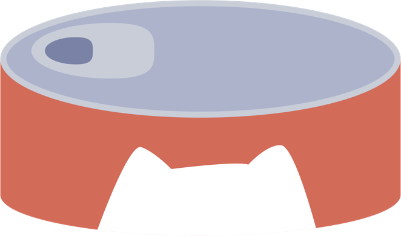

資料庫系統 期末專題 DemoDatabase Systems · Final Demo
徐法恩・魏提安・鄧玉璿・黃柏瑋・陳俊佑
指導老師 待補 日期 待補
指導老師 待補 日期 待補
NTUT · 115-1 · 資料庫系統 Database Systems

Revised User Stories · 使用者故事（1/2）
每個故事都對應到資料庫裡的表或規則Every story now maps to a table, a view or a trigger
訪客 · 顧客（購物）Guest · Customer — shopping
US-01
以關鍵字搜尋商品Search products by keyword
productUS-02
註冊為顧客（選配）Register as a customer
users UNIQUEUS-03
以 loginid 與密碼登入、登出Log in / out
users · user_roleUS-04
購物車加入、改數量、移除Manage the cart
cart_item_checkUS-05
結帳時看到小計、折扣、稅、運費、總額Full price breakdown
v_ordersUS-06
有效折扣自動套用Valid discounts apply automatically
order_discount顧客（訂單）Customer — orders
US-07
確認付款後完成下單Place the order after payment
orders · order_itemUS-08
查詢歷史訂單與目前狀態Order history & status
orders_status_logUS-09
received 時直接取消訂單Cancel while “received”
orders_status_checkUS-10
選商品與數量申請退貨，每單一次One return request per order
return_item_insertUS-11
對買過的商店評分評論（選配）Rate the store
store_review_inserttable資料表view檢視表trigger資料庫 trigger
19 則故事自 Phase 1 起保留不變 · Source: Phase 4 SRS §2.2 · db/init/*.sql
Revised User Stories · 使用者故事（2/2）
後台的規則，交給資料庫最後把關Back-office rules are guarded by the database itself
工作人員Staff
US-12
新增、查詢、修改、刪除商品與庫存Manage products and stock
product_touchUS-13
訂單依序 processing → shipping → closedAdvance order status
orders_status_checkUS-14
審核退貨申請，同意或拒絕Approve / reject returns
return_request_updateUS-15
新增三種折扣，系統給唯一代碼Three discount types, unique code
discount_code_immutableUS-16
同商品特殊活動期間重疊時拒絕Reject overlapping periods
product_discount_checkUS-17
各商店日、週、月銷售報表Daily / weekly / monthly sales
v_store_daily_salesUS-18
暢銷商品與期間統計（選配）Best sellers
v_product_sales
平台管理員Administrator
US-19
建立帳號、管理角色、停用違規帳號Accounts, roles, deactivation
users · user_role
期中 → 期末，什麼變了？What changed since the midterm
故事本身沒有增減；改變的是每則故事落在資料庫的哪裡：
・12 個 trigger 守住跨表、跨狀態的規則（BR-06、13、19、25…）
・報表改由檢視表產生，不在程式裡算
・US-16 原本靠 EXCLUDE，正規化後改用 trigger（見第 8 頁）
Source: Phase 4 SRS §2.2 · db/init/02_triggers.sql

謝謝聆聽Thank you · Q & A
github.com/Frank05210000/database-project
FUWA FUWA e-Shop